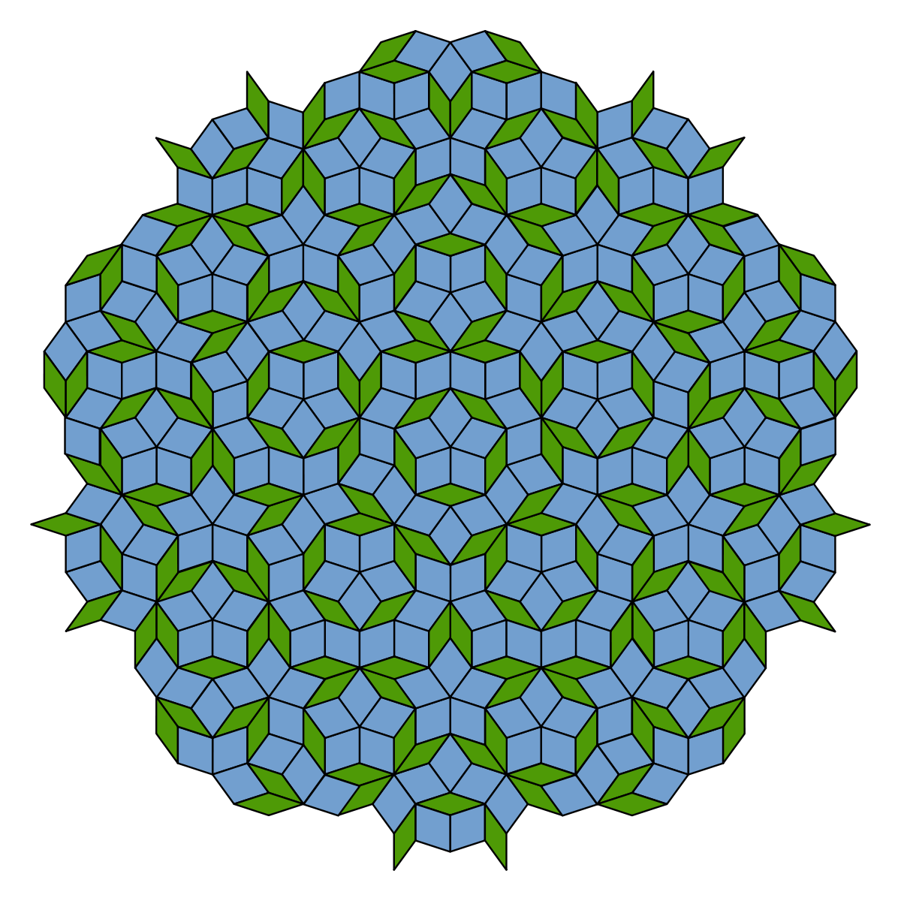

Tassellazioni del piano
Introduzione alle tassellazioni
Una tassellazione è una configurazione costituita da poligoni o figure, detti tasselli, uguali o differenti tra loro, che ricoprono una porzione di piano, l'intero piano o l'intero spazio. I due requisiti essenziali sono che il ricoprimento sia completo, senza spazi tra i tasselli, e non vi siano sovrapposizioni tra le tessere.
Alcuni esempi sono sicuramente le piastrellature di pavimenti o pareti, oppure particolari decorazioni artistiche, come quelle dell'Alhambra a Granada.

Le prime tassellazioni risalgono ai Sumeri, mentre il primo matematico che le ha studiate in tempi più recenti è Keplero: ne troviamo infatti traccia nel trattato Le armonie del mondo del 1619.
- l'unione di tutti i tasselli è X,
- tasselli distinti hanno parti interne disgiunte.
Le tassellazioni periodiche
Una tassellazione si dice periodica se viene costruita ripetendo una cella elementare di base.
Il caso piano
Teorema Una tassellazione piana T è periodica se e solo se esistono due vettori v1, v2 linearmente indipendenti tali che se T viene traslata tramite v1, v2, rimane invariata.
Osserviamo poi che per il Teorema Fondamentale della Cristallografia, che definisce i legami tra i parametri relativi agli assi di riferimento di un cristallo, si possono costruire tassellazioni periodiche piane utilizzando come cella elementare un poligono regolare se e solo se tale poligono è un triangolo, un quadrato o un esagono.


In realtà abbiamo comunque molta libertà: il tassello elementare può essere infatti un po' modificato. All'interno della cella di base si possono disegnare diverse figure e si può addirittura trasformare il tassello stesso aggiungendo o sottraendo parti uguali oppure applicando movimenti rigidi, omotetie, intrecci e colorazioni.
Fatti curiosi
- I pattern delle tassellazioni periodiche formano i 17 gruppi cristallografici piani.
- Il problema di Domino, ossia stabilire se un dato insieme di prototipi di tasselli possa originare una tassellazione periodica, è indecidibile.
Esempi
- In natura, esempi di tassellazioni periodiche sono il favo delle api, le fratture del terreno roccioso, note come tassellazioni di Gilbert, oppure le soluzioni saponate che si aggregano tassellando lo spazio secondo le leggi di Plateau.
- Il grafico olandese Maurits Cornelis Escher, manipolando opportunamente un singolo modello ornamentale, ha costruito tassellazioni periodiche di grande effetto.


Altri esempi dei lavori di Escher sono i dischi tassellati con geometria iperbolica.
Inoltre, è possibile combinare i tre poligoni fondamentali con varie dimensioni, ed ottenere le 8 tassellazioni semiregolari.


Applicazioni
Una delle applicazioni più comuni delle tassellazioni periodiche è sicuramente il rendering di ambienti 3D in computer grafica: tassellando le figure da rappresentare, si può creare una forma tridimensionale più dettagliata. Rendendo dinamica la tassellazione, in modo che si adatti in base alla vicinanza dell'oggetto, si può inoltre ottenere un risparmio di risorse.
Le tassellazioni non periodiche
Le tassellazioni non periodiche sono quelle che non possiedono simmetrie traslazionali. Il popolare gioco del Tangram costituisce un esempio di tassellazione non periodica.
Le tassellazioni di Penrose
Il matematico Roger Penrose (1931 – ) ha scoperto l'esistenza di particolari tipi di tasselli che hanno la particolarità di essere replicabili in modo non periodico. Ha definito due coppia di figure che derivano da una forma pentagonale:
- la coppia dardo – aquilone,
- la coppia di rombi.

Tutti i tasselli hanno angoli multipli di 36 gradi.


Come per le tassellazioni periodiche, da queste coppie è possibile, mediante aggiunta o sottrazione di parti uguali, costruire altri tasselli.
Applicazioni
Una delle maggiori applicazioni delle tassellazioni aperiodiche è lo studio dei quasicristalli, particolari materiali in cui gli atomi sono disposti in una struttura deterministica ma non ripetitiva, cioè non periodica. Un esempio ne è l'icosaedrite, scoperta nel 2009.
Il tassello Einstein
Per molto tempo è stato un problema aperto, noto come ricerca del tassello Einstein, trovare una tassellazione del piano che utilizzi un solo tipo di tassello ripetuto in modo non periodico. Nel tempo sono stati proposti numerosi candidati come tassello Einstein, ma in generale si erano sempre scontrati in qualche modo con la definizione iniziale. A Marzo 2023, il team di David Smith ha fornito un esempio di tassellazione monoedrica non periodica.
Tale tassello è stato chiamato Hat e può essere costruito combinando opportunamente 16 triangoli rettangoli congruenti.

Il team di ricerca ha dichiarato che con il tassello Hat è possibile costruire una tassellazione monoedrica, cioè che usa un solo tipo di tassello, aperiodica. Nell'articolo, forniscono addirittura un'intera famiglia di tasselli Einstein: gli appartenenti sono l'uno il trasformato dell'altro tramite manipolazioni indipendenti e continue.
Nella comunità accademica, il tassello Hat desta però ancora qualche dubbio: per raggiungere l'aperiodicità è infatti necessario utilizzare anche il suo speculare. Questo problema è stato risolto da un altro membro della famiglia di tasselli scoperto a maggio 2023 sempre dal team di David Smith, il tassello Spectre. Di fatto è stato trovato un esemplare di tassello Einstein.

Il monotassello aperiodico è privo di simmetrie, ha 13 lati e gli angoli sono multipli di 30, in modo da favorirne varie rotazioni.

Si nota facilmente che la faccia rossa e il suo speculare non possono essere sovrapposte ottenendo la stessa figura: il tassello è detto chirale.
Accostando alcune piastrelle per traslazione si ottiene una torre di spettri.

Si possono impilare quante piastrelle si voglia; impilandone due o tre, si può ancora estendere la tassellazione, ma se la torre è composta da più di tre piastrelle ciò diventa impossibile. Tuttavia, violando la richiesta di monoedricità e usando anche il tassello speculare è possibile ottenere una tassellazione biedrica periodica, accostando due torri infinite, una di tasselli Spectre, e una di tasselli speculari. La striscia che si ottiene può essere replicata in modo da riempire tutto il piano.
Costruzione della tassellazione monoedrica aperiodica con il tassello Spectre
Per costruire la tassellazione aperiodica con lo Spectre è necessario iniziare combinando due tasselli: si ottiene il tassello Mystic, il cui nome deriva dal profilo che assomiglia ad un Buddha. Inoltre, tale costruzione è simmetrica rispetto all'asse indicato nella figura seguente.

Per proseguire con la tassellazione, si procede per livelli. Il primo livello consiste nel creare due aggregati, lo Spettro e il Mistico di livello 1.


Lo Spettro di livello 1 si ottiene circondando un Mistico (di livello 0) con 7 Spettri disposti come nella figura precedente a sinistra. Rispetto al tassello blu del Mistico e procedendo in senso orario, dal rosa più tenue al rosso, l'angolo di rotazione di ciascuno Spettro è -120, -60, -60, 0, 60, 60, 120 gradi. Il Mistico di livello 1 si ottiene rimuovendo lo Spettro più esterno, come mostrato a destra nella figura precedente. Si noti quindi che tra i due aggregati vi è un solo tassello di differenza.
Queste costruzioni sono il primo passo di una procedura che si generalizza e che permette di riempire regioni sempre più estese.
Per la costruzione del secondo livello, come mostrato nella figura seguente, si considera un Mistico di primo livello, circondato da 6 spetti di livello 1, e se ne aggiungerà uno per lo Spettro di livello 2, e così via.

Si prosegue poi con il livello 3 nella figura seguente.